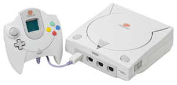
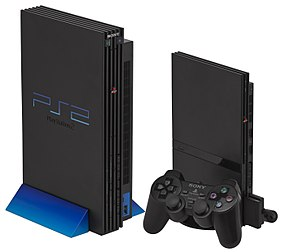
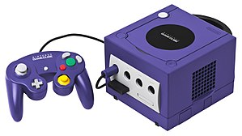
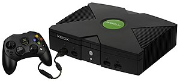

| Name | Dreamcast | PlayStation 2 | GameCube | Xbox |
|---|---|---|---|---|
| Manufacturer | Sega | Sony | Nintendo | Microsoft |
| Image(s) |  |  |  |  |
| An NTSC-U Dreamcast console, controller and VMU. On PAL consoles, the Dreamcast swirl was blue, and on NTSC-J it was red, but on games the swirl was orange. | Left: An original model PlayStation 2 Right: A slimline PlayStation 2 with DualShock 2 controller and memory card. |
An indigo GameCube, controller and memory card | An Xbox console and "Type-S" controller | |
| Launch prices | US$199.99 (equivalent to $300.78 in 2018) GB£199.99 (equivalent to £340.41 in 2018) |
US$299.99 (equivalent to $436.45 in 2018) GB£299.99 (equivalent to £510.63 in 2018) |
US$199.99 (equivalent to $282.98 in 2018) GB£129.99 (equivalent to £207.7 in 2018) €199.99 |
US$299.99 (equivalent to $424.47 in 2018) GB£299.99 (equivalent to £479.34 in 2018) €479.99 |
| Current price | N/A | N/A | N/A | N/A |
| Best-selling game | Sonic Adventure, 2.5 million (as of June 2006) | Grand Theft Auto: San Andreas, 20.81 million (as of August 24, 2013) | Super Smash Bros. Melee, 7.5 million (as of August 24, 2013) | Halo 2, 8.49 million (as of August 24, 2013) |
| Release date |
|
|
|
|
| Discontinued |
|
|
Q3 2007 |
|
| Accessories (retail) |
|
|
|
|
| CPU | 200 MHz SuperH SH-4 | 294 MHz MIPS "Emotion Engine" 299 MHz later models | 485 MHz PowerPC "Gekko" | 733 MHz x86 Intel Celeron/PIII Custom Hybrid |
| GPU | 100 MHz NEC/VideoLogic PowerVR CLX2 "Holly" | 147 MHz "Graphics Synthesizer" | 162 MHz ATI "Flipper" | 233 MHz Custom Nvidia NV2A |
| RAM | Main RAM 16 MB SDRAM Video RAM 8 MB Sound RAM 2 MB |
Main RAM 32 MB dual-channel, RDRAM Video RAM 4 MB eDRAM Sound RAM 2 MB |
Main RAM 24 MB 1T-SRAM, 16 MB DRAM Video RAM 3 MB embedded 1T-SRAM |
64 MB unified DDR SDRAM |
| Audio | Stereo audio, with:
|
5.1 Surround sound audio, with:
|
Stereo audio, with:
|
Stereo audio, with:
|
| Optical media | GD-ROM, CD | DVD, CD | Nintendo GameCube Game Disc | DVD, CD |
| Video outputs | VGA (RGBHV), SCART (RGBS), S-Video, composite | Component (YPBPR, RGsB), VGA (RGsB; progressive scan games/PS2 Linux only), SCART (RGBS), S-Video, composite | Component (YCBCR), SCART (RGBS; PAL consoles only), S-Video (NTSC consoles only), composite | VGA (RGBHV), component (YPBPR), SCART (RGBS), S-Video, composite |
| Online service | Sega Net (2000–2002), Dreamarena (2000-2003) | Non-unified services (2002–2016) | Non-unified services (2003-2009) | Xbox Live (2002–2010) |
| Backward compatibility | N/A | PlayStation | Game Boy family (Game Boy Player required)[1] |
N/A |
| System software | SegaOS, Windows CE, KallistiOS | Proprietary OS, PS2 Linux | Proprietary OS, Gamecube Linux | Xbox Music Mixer DVD Playback Kit, Xbox Linux |
| Consumer programmability | Homebrew possible via KallistiOS, Windows CE, Katana (the latter two are illegal in the homebrew community) | Yabasic software and limited Linux OS. Homebrew also possible via both modchips and softmods. | Homebrew possible via SD card adapters and SD media launchers | Via Softmods and/or modchips; modified Windows CE 2.x, Linux |